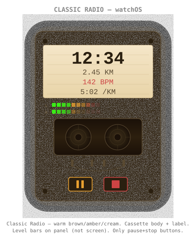
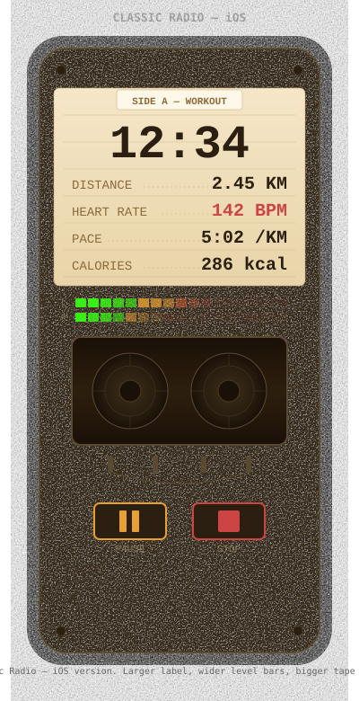
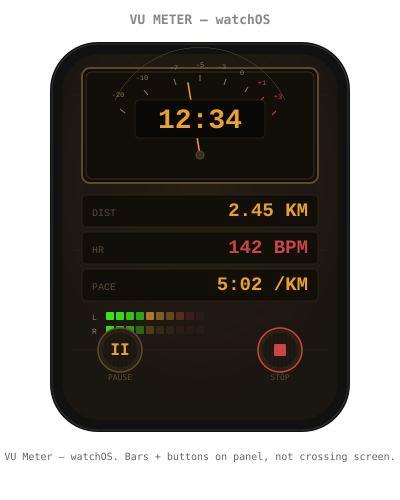
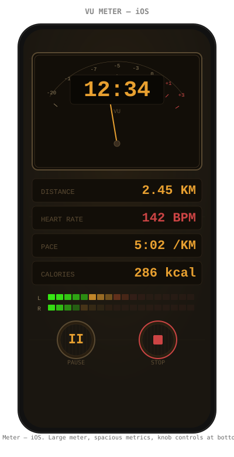
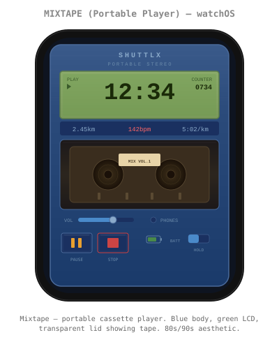
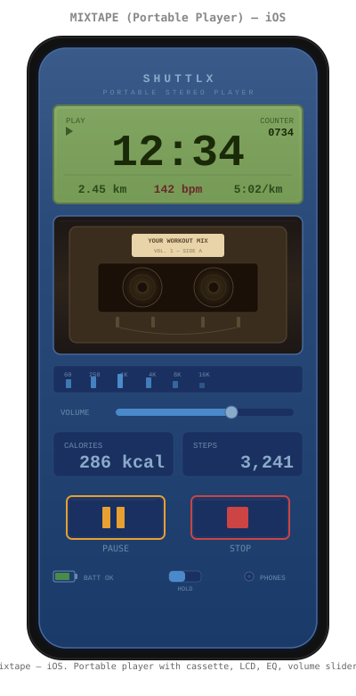

Each could be its own selectable theme in the app
Cassette body background with label sticker for timer/metrics. Tape reels visible through window. Level bars on the cassette panel (not crossing into screen). Only pause + stop buttons — no rewind/ff.


Analog VU meter with needle as timer frame. LED level bars fully on panel below metrics. Rotary knob controls pushed down to bottom — nothing crosses between screen areas. Brushed warm panel texture.


80s/90s portable cassette player — blue metallic body, green LCD display, transparent lid showing cassette with spinning reels. EQ visualizer, volume slider, battery indicator, hold switch. Chunky mechanical transport buttons.

